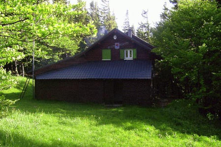
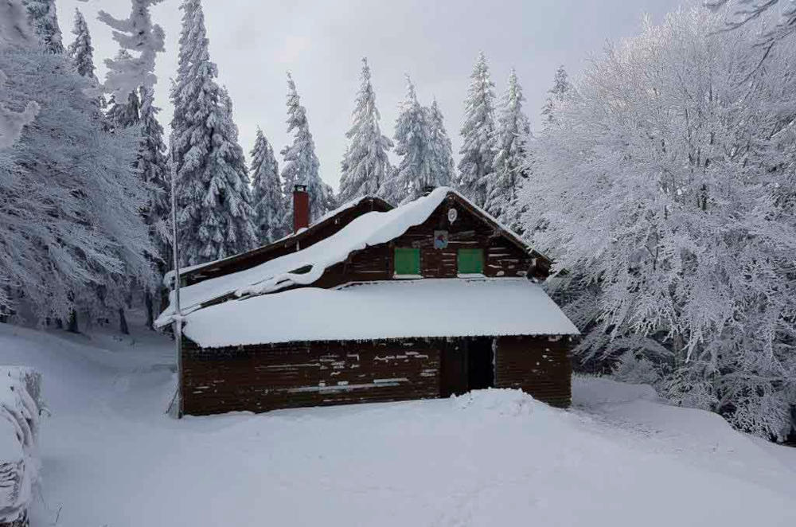
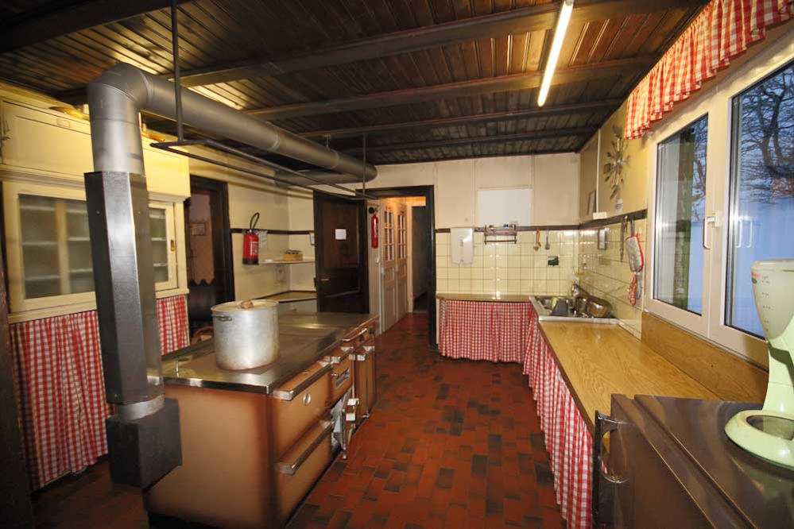
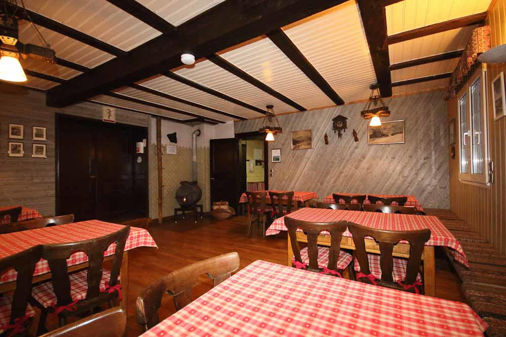
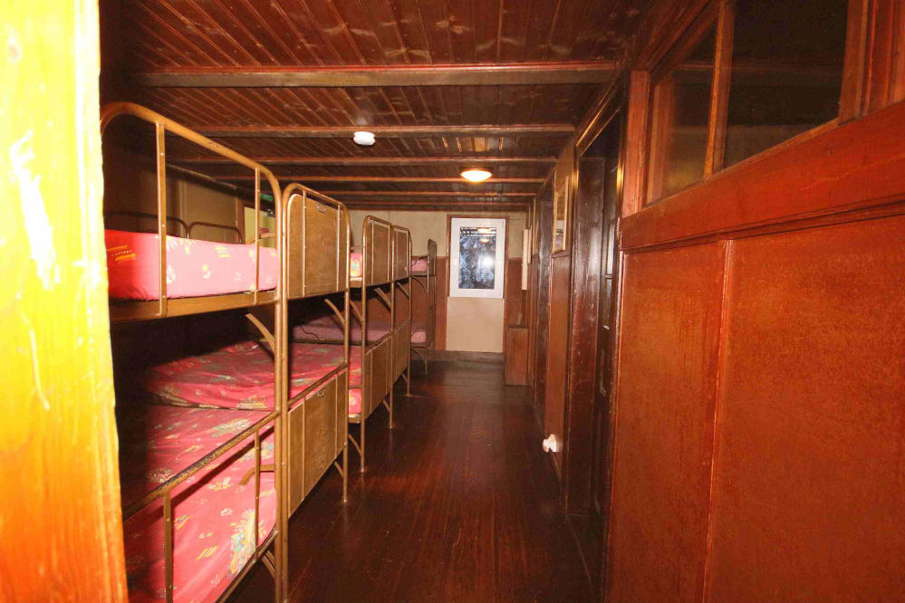
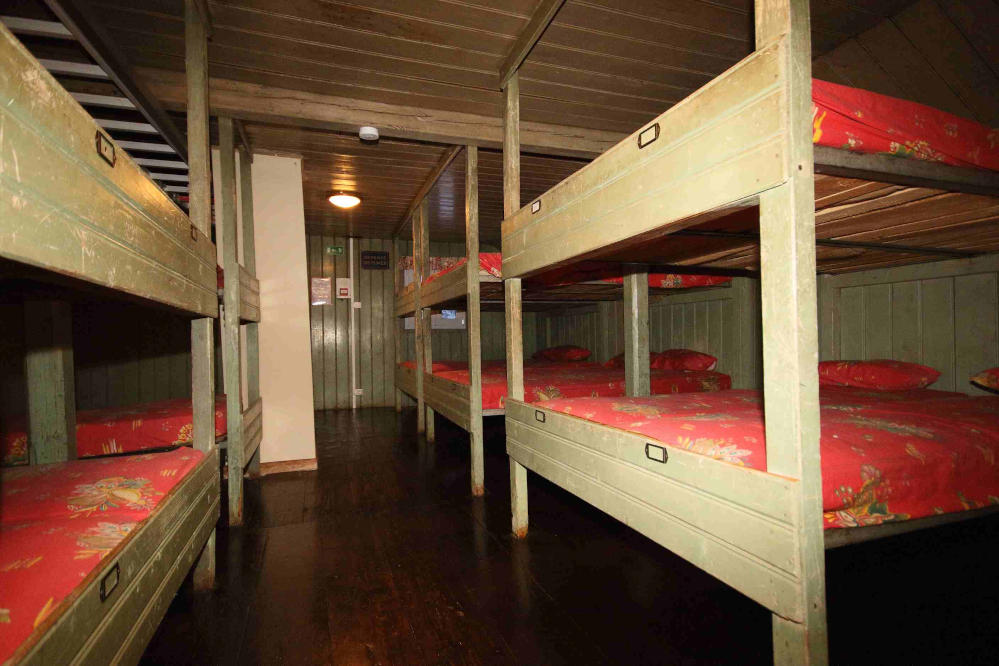

Le refuge du Roedelen :
Notre association possede un refuge qui se situe au pied du Grand-Ballon : le point culminant des Vosges.
Notre chalet est ouvert un week-end sur deux l'hiver, entre sur réservation, et tous les Week-End d'été.
Sa situation est idéale, à proximité du GR 532 et de la route des crêtes.
On peut y accéder l'été de Guebwiller, à pieds ou en vélo, en passant par de nombreux itinéraires et l'hiver depuis la station du Markstein, à environ 6 Km par une piste dammée pour le ski de fond classique, skating et raquette .
Notre refuge est à un point idéal pour réaliser le tour de la vallée de Guebwiller en trois jours en passant par le Petit-Ballon puis le Grand-Ballon.
Notre chalet est équipé d'une salle de séjour et d'un dortoir comptant une capacité de 30 couchages, ainsi qu'une cuisine en libre service et des sanitaires (toilettes, douches etc...).
Tarifs :
| Non Menbre Adultes | Non Menbre Enfants | |
|---|---|---|
| Nuitée | 15€ | 8€ |
| Menbre Adultes | Menbre Enfants | |
| Nuitée | 2.5€ | 2€ |
Des photos du refuge du Roedelen






Se restaurer à proximité :
Bien que nous sommes équipé d'une cuisine accessible à tous, il est possible de manger aux adresses suivantes :